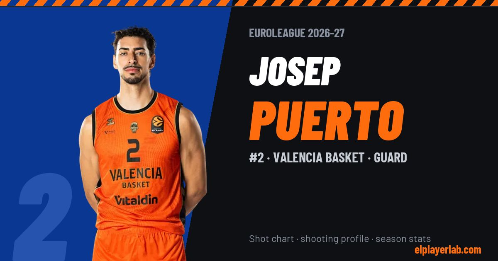

Valencia Basket · Euroleague 2026-27
Josep Puerto
#2 · Guard · Valencia Basket · 2026-27 · 3 games · 7.3 pts · 1.7 reb · 0.3 ast a game

- Number
- 2
- Position
- Guard
- Height
- 202 cm
- Weight
- 102 kg
- Born
- 1999-03-08
- Country
- Spain
Career
- Valencia 2025-2027
- Castelló (loan) 2019-2020
- Oviedo (loan) 2018-2019
- Valencia 2017
- Valencia B 2015-2018
- |career_start = 2015 (NCAA)
Euroleague Player Lab: shot charts, shooting profiles and season stats for every player, rebuilt after every game.